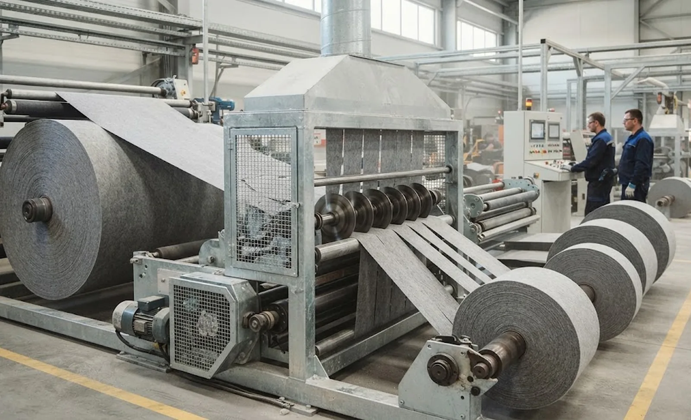
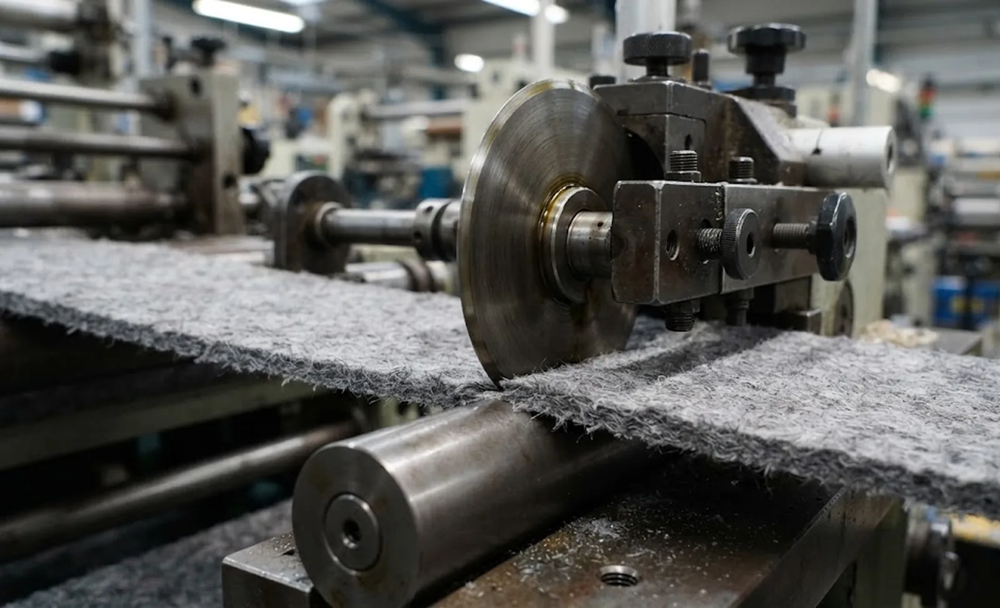

Published October 3, 2026 | By HDPTH Technical Editorial Team

A 25 µm PET film and a 600 g/m² needle-punched geotextile share a machine architecture and almost nothing else. The film is stable and fails at the edge by cracking; the geotextile is thick, bulky and compressible, deflects away from the blade, sheds fibre and mineral filler, and needs enough tension to sit flat without being pulled narrow. Suppliers who sell film lines into geotextile plants learn three lessons quickly: the blade must penetrate the web rather than scissor it, the waste strip is measured in centimetres, and the finished roll is heavy enough to change everything downstream of the winder — a point worth weighing before buying a nonwoven slitter rewinder.
Start from the material data sheet, not the quotation
| Material parameter | Typical heavy-nonwoven range | What it changes on the machine |
|---|---|---|
| Mass per unit area | 150–1,200 g/m² | Unwind and rewind torque, shaft stiffness, drive sizing |
| Thickness | 1–6 mm | Knife overlap and bevel geometry, lay-on roller compliance |
| Tensile strength | CD markedly lower than MD | Maximum usable tension, risk of necking and width loss |
| Fibre and filler | PP, PET, recycled blends, mineral-filled | Blade wear rate, duct loading, roller abrasion |
Tension architecture for a bulky, low-modulus web
Tension is where heavy nonwoven converting fails most quietly. A thick web feels rigid to the hand, but its cross-direction tensile is often the weakest property in the plant, so the usable band is narrow: enough to hold the web flat into the knives, not enough to pull the width narrow. Set maximum tension from a measured CD breaking load on your lightest grade, keep real margin below it, and verify by measuring slit width rather than reading the display.
The unwind supplies most of that stability. A braked unwind can suit light rolls, but above roughly 300–400 kg the brake turns kinetic energy into heat, torque ripple becomes tension variation, and the web takes the punishment; a driven or regenerative unwind handles the same roll in control. Compare the options in our braked versus driven unwind analysis and match the mount to your handling with the shafted versus shaftless unwind comparison. On the rewind, apply taper tension: a constant recipe produces an over-tight roll with a bulged centre and edge wrinkles.
Knife systems: crush, shear, hot and ultrasonic
Thick compressible webs slit badly under shear, because the material deflects before the blade pair can close on it. Most geotextile slitting therefore uses crush or score cutting: a hardened bottom anvil acts as the counter-surface and the top blade is loaded into the web, cutting by pressure rather than scissor action. Overlap and loading become the critical settings, and blade bevel is chosen for penetration rather than slicing.
Abrasion is the second constraint. Mineral-filled and recycled-fibre geotextiles dull tooling far faster than virgin polymer film, so blade cost is a running line item; carbide and coated blades cost more per piece and often less per tonne converted. Budget life with the knife life and consumables cost method and choose geometry with the blade geometry selection guide. Where a non-shedding edge is essential, hot-knife or ultrasonic slitting seals the cut edge, at the cost of lower speed and fume extraction.
Trim removal, dust and nuisance airflow
A trim strip 50–200 mm wide and several millimetres thick will not be carried away by a film-line edge-trim fan. It needs a dedicated extraction path or trim winder, sized on the heaviest grade at maximum speed and routed so it does not pull the web off the knives on the way out. Trim jams are among the most common causes of unplanned stops on heavy nonwoven lines, and they are a sizing problem rather than an operating one.
Dust is the second deferred design input. Slitting needled fabric releases fibre and filler at the slit line; without enclosure and extraction it forms felt-like deposits on rollers, marks the web and reaches bearings and sensors. Enclose the slit point, extract above and below the knife line, and keep duct velocity high enough to carry fibre horizontally — but balance the airflow, because an aggressive hood pulls the web sideways into the knives. Have your own EHS team assess the combustible-dust hazard; see the dust extraction system notes for the equipment side.

Forming a roll that stays straight
Geotextile rolls are usually consumed as rolls — unrolled on site, cut and seamed — so a telescoping roll wastes material and a roll wound too hard carries hard-start marks and edge wrinkles into finished work. Surface winding with a driven lay-on roller gives the most direct density control on thick bulky webs, with centre assist where the web needs help starting cleanly on the core. Nip pressure, taper tension and speed ramp interact, so the recipe is found empirically on your material and locked into the recipe system: set a measured density target with the roll hardness testing method and diagnose bulges and dishing with the roll defect troubleshooting guide.
Width accuracy and edge quality
Where rolls go to overlap seaming, edge straightness is functional rather than cosmetic: a wavy edge means an uneven overlap and a seam installers will not trust. Heavy nonwovens are usually specified looser than film, often ±2 to ±3 mm, but the number that matters is repeatability across the full width, along the whole roll, on first and last metre. Write that into the slit width tolerance method and the slit edge quality criteria before the acceptance test.
Roll handling and site planning
A finished geotextile roll can weigh several hundred kilograms, which turns doffing, weighing and wrapping into engineering rather than labour. Decide early between a cantilevered shaft, ejector, unloading ramp or carousel, and check floor loading, headroom for lifting gear and pallet access. Review roll unloading options and packaging requirements during machine selection, and confirm power, compressed air, extraction capacity and floor penetrations against the utility requirements checklist before approving a layout.
Converting geotextiles or heavy technical nonwovens?
Send the material grade, roll weight, slit widths and target line speed. HDPTH will propose a tension range, knife system, trim and dust arrangement, and arrange a full-width trial on your own material.
Request a Machine ConfigurationQuestions to put to every vendor
- Can you run a full-width trial on my heaviest and lightest grade, and let me keep the rewound rolls?
- What tension range, taper method and minimum tension increment does the machine hold reliably?
- Which slitting method and blade material, and what blade life per tonne at this filler content?
- How is a 150 mm trim strip removed at maximum speed, and what happens on a trim break?
- What extraction volume at the slit point, and who verifies the airflow does not disturb the web?
Frequently asked questions
Can a standard film slitter rewinder be used to slit geotextiles?
Sometimes — if the frame is strong enough and four things change: a driven unwind with enough torque, a crush or hot-knife slitting station instead of a film shear station, trim removal sized for 50–200 mm strips, and dust extraction at the slit point. Mechanical strength is usually the blocker: frames, shafts, bearings and lay-on loading on a film machine are sized for 20–40 µm webs.
Which slitting method gives the best edge on needle-punched geotextiles?
For most needle-punched and spunbond geotextiles, crush (score) cutting gives the most stable edge, because a thick compressible web deflects away from a shear pair before the blades can scissor it. Hot-knife and ultrasonic slitting seal the edge and cut fibre shedding, which suits dust-sensitive work, but they run slower and need fume extraction. Confirm the choice with a trial on your own roll.
How should I set tension for a heavy nonwoven web?
Start from measured data, not a rule of thumb. Take the lowest CD tensile breaking load for the lightest grade you will run and set maximum operating tension well below it — a common band is 10–20% of CD breaking load. Then taper tension down as rewind diameter grows, and watch for width loss and necking at the slit point.
Do I need a driven unwind for geotextile rolls?
Above roughly 300–400 kg, or wherever the unwind must accelerate quickly, a driven unwind is normally correct. A braked unwind dissipates roll kinetic energy as heat and depends on stable brake torque as diameter falls; on heavy rolls that inertia produces brake wear, tension ripple and web damage. A motorised or regenerative unwind turns it into control.
How do I control fibre and filler dust during geotextile slitting?
Treat extraction as a design input. Enclose the slit point and trim take-away closely, extract above and below the knife line, and keep duct velocity high enough to carry fibre rather than let it settle. Balance the airflow so the hood does not pull the web into the knives, and have your own EHS team assess the combustible-dust hazard.
Sources
- ISO standards catalogue: ISO 9864 (mass per unit area), ISO 9863 (thickness), ISO 10319 (wide-width tensile) and ISO 12236 (static puncture) for the geotextile data used in machine sizing
- ASTM: geosynthetic and nonwoven test methods such as D4632 (grab breaking load) and D4833 (index puncture)
- EU Machinery Regulation (EU) 2023/1230: safety requirements applying to knife systems, extraction and guarding
- ISO 9001: quality management requirements behind trial records, acceptance tests and material traceability